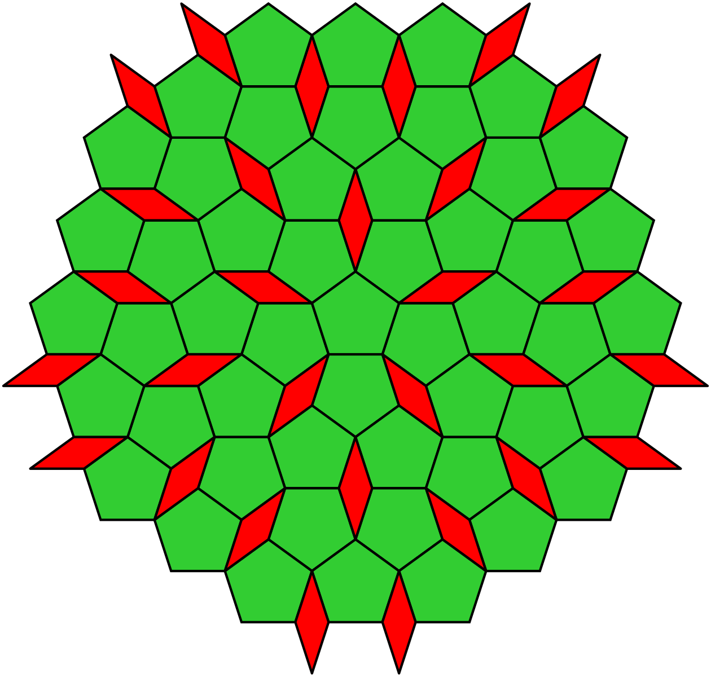
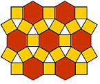

Rules to Expanse
by Adam Richard
Players: 2 or 4
Genre: Abstract strategy, wargame
Introduction: Expanse is an abstract wargame. It has no theme and takes place on a board consisting of geometric shapes.
Object: To own more of the board's spaces than your opponent.
Pieces:
- Game board.
- Cubes representing ownership (red and green, and yellow and blue for the 4 player variant).
- Pieces representing units (red and green, and yellow and blue for the 4 player variant).
- 12 tokens representing special abilities.

Setup:
- Place the game board between the players.
- Set the stock of special abilities beside the board.
- Choose a player to set up the board (the "setup player"), either randomly or by any other method.
- That player puts one cube of each colour on any 2 different, non-adjacent pentagons on the board of their choice.
- Note: "adjacent" means spaces that share an edge; spaces that touch only at a vertex are not adjacent.
- The other player then chooses which colour will be theirs, red or green. Red always goes first.
Gameplay
The board shown in the picture consists of pentagon spaces, and diamond regions which are blocked off (units can't go on the diamonds).
Each player's turn consists of taking a number of actions. The number of actions you get is determined by how many spaces you own (represented by cubes on spaces). At the beginning, you start with 2 actions per turn, and for every 2 spaces you own at the start of your turn, you get an extra action. Taking actions is always optional.
Each action is one of the following possibilities:
- Add: Add a new unit to an owned space from your stock. You can't take this action if there are enemy units occupying the owned space.
- Move: Move any number of units from a single space to a single adjacent space. However, each enemy unit in a space pins one unit, preventing it from moving out of the space.
- Remove: Remove an enemy unit from a space where you have more units than they do. Units in adjacent spaces (supporters) also contribute to the strength of each side by half as much. That is, the strength of each side is increased by the total number of units in adjacent spaces divided by 2, rounded down. If the strengths of both sides are tied (after rounding), you can't take the Remove action.
- Expand: For 2 actions, claim ownership of a space by replacing a unit of your colour with a cube of your colour. If your opponent already owned the space, remove their cube when you do so.
- You can't take this action if there are enemy units on the space. (You can take this action on an undefended enemy cube to take ownership of the space away from your opponent.)
- You can't take this action if there are any adjacent spaces with cubes, of either colour. Cubes must be at least 2 spaces apart.
- Research: Take a special ability from the stock of special abilities and put it in front of you. At the end of your turn, put the ability under a cube that you own which doesn't already have one. This gives you that ability for future turns, for as long as you continue to control that cube. You can't take this action if you don't have a cube to put it under. Note that if your opponent takes the cube from you by Expanding on that space, they also steal your special ability without needing to Research it!
- Eliminate: Remove an opponent's cube from a space where you have more units than they do, according to the same rules as for the Remove action, except there must be no enemy units present in the space. Any special ability under the cube is returned to the stock and your opponent loses that ability.
Unit Cap: Each space has a limit of 5 units that it can support. You are allowed to have more units on a space than this limit, but at the end of your turn, units are removed down to the limit, alternating side for each removal, beginning with your units (the units of the current player). For example, if there are 4 of your units and 4 of your opponent's units on a space at the end of your turn, remove one of yours, then one of theirs, then one of yours, leaving 5 units.
Special Abilities: This is the list of special abilities and what each one does. Note that none of the abilities stack, so having both copies of an ability has no extra effect compared to having just one copy (but it blocks your opponent from having that ability).
- Walls: Increases the defense of spaces with your owned cubes by 1 in determining whether your opponent can remove units from these spaces. (It has no effect in determining whether you can remove their pieces from your owned spaces.) This ability doesn't stack if you own multiple special spaces of this type.
- Sneak: Your units aren't pinned when they move.
- Range: Lets you Remove enemy units from an adjacent space, provided you have the strength to do so. When using the Range ability, you consider units adjacent to the target space (the space you want to remove the unit from) to be the half-strength contributors. Additionally, any units you have in the target space contribute half-strength. However, when using Range to Remove from a space where your opponent has an owned cube, their defense is increased by 1 (or two if they have Walls). Range cannot be used with the Eliminate action to remove a cube in an adjacent space.
- Resist: Lets you Add units even if enemy units are present in the space with your cube.
- Support: The strength of your supporting units rounds up instead of down in determining strength for the Remove action.
- Speed: Once per turn, and only as your last action, when you take a move action, you can move your group of units two spaces instead of one. Note: this does not allow you to move some units one space and other units two spaces in a single action; all units must always move the same number of spaces on a move action.
Game End
When you have 2 more actions than your opponent at the start of your turn, the game is over and you are the winner.
Stalemate
If, at the start of any player's turn:
- The players are tied in number of owned spaces, and
- There are no new spaces on the board where an expand could occur (i.e. the only places you can expand would be to replace your opponent's owned space)
then the game ends in a draw.
Four Player Variant
Expanse can also be played as a four player team game (2 versus 2). To do so, you use 4 sets of cubes and units, red and blue versus green and yellow. The new setup steps are:
- Teammates sit opposite each other.
- One team is chosen to collectively set up the board and the other team will decide which side they want to be.
- The setup team places 4 cubes, one of each colour, none of which are adjacent.
- The other team then chooses which pair of colours will be theirs. Play will start with red and proceed clockwise.
- Teammates then each pick a colour out of the 2 colours their team controls.
The other rules are the same as for two player Expanse, with the following notes / exceptions:
- The game end condition is slightly different. At the start of each player's turn, if that player's team's total actions is at 3 more than the other team's total actions, then the game is nearly over. However, to win, the current player's team must maintain this condition until the current player's partner's next turn as well.
- If one player gets a special ability, their partner does not get the special ability.
- When taking the Remove action, your partner's units in adjacent spaces do support your units by the regular half-strength rules. Each partner's supporters are totaled, divided by 2, and rounded down (for example, a single supporting unit of each side contributes a strength of 0). Partner's units in the same space support at full strength, as if they were your own units. However, don't forget that when using Range, your units in the target space are always half-strength, so your partner's are half-strength as well when using Range. Unless both partners have Range, your partner's units in the space you choose to use Range from are merely half-strength supporters.
- When removing units due to the unit cap at the end of a turn, the order of units that get removed is: first the current player, then a unit of the opposing team, clockwise player first, then the current player's partner, then an opponent (the other opponent if applicable), and so on. In other words, the teams always take turns losing units one at a time, and within a team, each partner takes turn losing a unit.
- It is possible, though rare, for one player to be eliminated. In this case, their partner must gift them one of their owned spaces by replacing their cube on an owned space of their choice with a cube of the eliminated player's colour.
Custom Boards
It is possible to play on other custom boards as well, made of any pattern of geometric shapes. The unit cap for spaces of different shapes match the number of sides of the shape; for example, a board with hexagon spaces would have a unit cap of 6 units on those spaces, and square spaces would have a unit cap of 4 units. Here is an example of another board with hexagon and square spaces (with the triangle regions being treated as blocked off):
